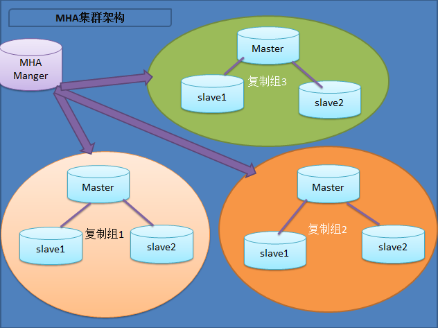

MHA高可用架构原理及搭建
简介：
MHA（Master High Availability）目前在MySQL高可用方面是一个相对成熟的解决方案，它由日本DeNA公司youshimaton（现就职于Facebook公司）开发，是一套优秀的作为MySQL高可用性环境下故障切换和主从提升的高可用软件。在MySQL故障切换过程中，MHA能做到在0~30秒之内自动完成数据库的故障切换操作，并且在进行故障切换的过程中，MHA能在最大程度上保证数据的一致性，以达到真正意义上的高可用。
该软件由两部分组成：MHA Manager（管理节点）和MHA Node（数据节点）。MHA Manager可以单独部署在一台独立的机器上管理多个master-slave集群，也可以部署在一台slave节点上。MHA Node运行在每台MySQL服务器上，MHA Manager会定时探测集群中的master节点，当master出现故障时，它可以自动将最新数据的slave提升为新的master，然后将所有其他的slave重新指向新的master。整个故障转移过程对应用程序完全透明。
在MHA自动故障切换过程中，MHA试图从宕机的主服务器上保存二进制日志，最大程度的保证数据的不丢失，但这并不总是可行的。例如，如果主服务器硬件故障或无法通过ssh访问，MHA没法保存二进制日志，只进行故障转移而丢失了最新的数据。使用MySQL 5.5的半同步复制，可以大大降低数据丢失的风险。MHA可以与半同步复制结合起来。如果只有一个slave已经收到了最新的二进制日志，MHA可以将最新的二进制日志应用于其他所有的slave服务器上，因此可以保证所有节点的数据一致性。
目前MHA主要支持一主多从的架构，要搭建MHA,要求一个复制集群中必须最少有三台数据库服务器，一主二从，即一台充当master，一台充当备用master，另外一台充当从库，因为至少需要三台服务器，出于机器成本的考虑，淘宝也在该基础上进行了改造，目前淘宝TMHA已经支持一主一从。另外对于想快速搭建的可以参考：MHA快速搭建 我们自己使用其实也可以使用1主1从，但是master主机宕机后无法切换，以及无法补全binlog。master的mysqld进程crash后，还是可以切换成功，以及补全binlog的。

MHA工作原理总结
（1）从宕机崩溃的master保存二进制日志事件（binlog events）;
（2）识别含有最新更新的slave；
（3）应用差异的中继日志（relay log）到其他的slave；
（4）应用从master保存的二进制日志事件（binlog events）；
（5）提升一个slave为新的master；
（6）使其他的slave连接新的master进行复制；
Manager工具:
- masterha_check_ssh : 检查MHA的SSH配置；
- masterha_check_repl : 检查MySQL复制；
- masterha_manager : 启动MHA；
- masterha_stop：停止MHA；
- masterha_check_status : 检测当前MHA运行状态；
- masterha_master_monitor : 监测master是否宕机；
- masterha_master_switch : 控制故障转移(自动或手动)；
- masterha_conf_host : 添加或删除配置的server信息；
- masterha_secondary_check：检查备节点；
Node工具：
- save_binary_logs : 保存和复制master的二进制日志。
- apply_diff_relay_logs : 识别差异的中继日志事件并应用于其它slave。
- filter_mysqlbinlog : 去除不必要的ROLLBACK事件(MHA已不再使用这个工具)。
- purge_relay_logs : 清除中继日志(不会阻塞SQL线程)。
一、部署MHA环境介绍
mysql角色 | 主机名 | IP地址 | MHA角色 | 说明 |
master | mysql-master-1003306 | 10.10.10.100 | node | 主库 |
slave1 | mysql-slave-1013306 | 10.10.10.101 | node | 从库，当主库宕机时，自动切换到这台从库 |
slave2 | mysql-slave-1023306 | 10.10.10.102 | node、manager | 从库，只读，不作为master切换节点，由于资源有限，将manager同时安装在slave2上 |
二、基础环境配置
三台机器修改/etc/hosts
# master slave1 slave2
[root@mysql-master-1003306 ~]# cat /etc/hosts
127.0.0.1 localhost localhost.localdomain localhost4 localhost4.localdomain4
::1 localhost localhost.localdomain localhost6 localhost6.localdomain6
10.10.10.100 mysql-master-1003306
10.10.10.101 mysql-slave-1013306
10.10.10.102 mysql-slave-1023306
三台机器互相建立ssh互信，下面仅举一个例子，其他的按照下面方法逐个添加；
[root@mysql-master-1003306 ~]# ssh-keygen -t rsa -P '' -f ~/.ssh/id_rsa
Generating public/private rsa key pair.
Your identification has been saved in /root/.ssh/id_rsa.
Your public key has been saved in /root/.ssh/id_rsa.pub.
The key fingerprint is:
d0:ba:b2:62:09:6e:a1:4b:8a:c9:30:2c:e8:ef:d9:78 root@mysql-master-1003306
The key's randomart image is:
+--[ RSA 2048]----+
| |
| . |
| . . |
| o |
| . S |
|+. . |
|B+... . |
|X=+ +E |
|*=o*o. |
+-----------------+
[root@mysql-master-1003306 ~]# ssh-copy-id -i ~/.ssh/id_rsa.pub root@10.10.10.101
/usr/bin/ssh-copy-id: INFO: attempting to log in with the new key(s), to filter out any that are already installed
/usr/bin/ssh-copy-id: INFO: 1 key(s) remain to be installed -- if you are prompted now it is to install the new keys
root@10.10.10.101's password:
Number of key(s) added: 1
Now try logging into the machine, with: "ssh 'root@10.10.10.101'"
and check to make sure that only the key(s) you wanted were added.
#注意使用ssh IP 和 ssh HOSTNAME 进行验证！
##由于后面我们会把node和manager同时安装在slave2上，所以slave2上需要自己和自己互信，否则后面mha的ssh检测脚本会失败
三、搭建一主两从架构（基于GTID模式）
master配置文件
# master
[mysqld]
server-id=1003306
##binlog
log-bin=mysql-bin
sync-binlog=1
innodb_support_xa=1
binlog_format=row
##GTID
gtid_mode=on
log_slave_updates=1
enforce_gtid_consistency=1
##realylog
relay-log=mysql-relay-bin
relay_log_purge=0 ## 禁止 SQL 线程在执行完一个 relay log 后自动将其删除，对于MHA场景下，对于某些滞后从库的恢复依赖于其他从库的relaylog，因此采取禁用自动删除功能
后面会介绍如何通过mha清理relay log；
slave1配置文件
# slave1
[mysqld]
server-id=1013306
##binlog
log-bin=mysql-bin
sync-binlog=1
innodb_support_xa=1
binlog_format=row
##GTID
gtid_mode=on
log_slave_updates=1
enforce_gtid_consistency=1
##relaylog
relay-log=mysql-relay-bin
relay_log_purge=0
slave2配置文件
# slave2
[mysqld]
server-id=1023306
##binlog
log-bin=mysql-bin
sync-binlog=1
innodb_support_xa=1
binlog_format=row
##GTID
gtid_mode=on
log_slave_updates=1
enforce_gtid_consistency=1
##relaylog
relay-log=mysql-relay-bin
relay_log_purge=0
从库不要在配置文件中开启read-only，因为从库随时可能切换成主库，可以使用动态设置set global read_only=1
主库同步数据到两台从库
# master
[root@mysql-master-1003306 ~]# mysqldump -uroot -p --single-transaction -A --master-data=2 > all.sql
Enter password:
##这里加不加--master-data=2都行，因为复制已经不再是基于position号的形式了。
[root@mysql-master-1003306 ~]# scp all.sql 10.10.10.101:/root #将备份文件拷贝到从库
[root@mysql-master-1003306 ~]# scp all.sql 10.10.10.102:/root
从库恢复数据
# slave1
[root@mysql-slave-1013306 ~]# mysql -uroot -p < all.sql
Enter password:
# slave2
[root@mysql-slave-1023306 ~]# mysql -uroot -p < all.sql
Enter password:
开启复制
在master和slave1上创建复制账号，因为slave1随时会变成master，需要创建复制账号；slave2后面控制其不会成为master，所以不需要创建复制账号，当然，创建也可以；
# master
mysql> GRANT REPLICATION SLAVE ON *.* TO 'mharepl'@'10.10.10.%' IDENTIFIED BY 'echo123.';
Query OK, 0 rows affected, 1 warning (0.00 sec)
mysql> flush privileges;
Query OK, 0 rows affected (0.00 sec)
# slave1
mysql> GRANT REPLICATION SLAVE ON *.* TO 'mharepl'@'10.10.10.%' IDENTIFIED BY 'echo123.';
Query OK, 0 rows affected, 1 warning (0.00 sec)
mysql> flush privileges;
Query OK, 0 rows affected (0.00 sec)
在slave上开启复制
# slave1
mysql> CHANGE MASTER TO MASTER_HOST='10.10.10.100',MASTER_USER='mharepl',MASTER_PASSWORD='echo123.',MASTER_PORT=3306,MASTER_AUTO_POSITION=1;
Query OK, 0 rows affected, 2 warnings (0.03 sec)
mysql> start slave;
Query OK, 0 rows affected (0.06 sec)
# slave2
mysql> CHANGE MASTER TO MASTER_HOST='10.10.10.100',MASTER_USER='mharepl',MASTER_PASSWORD='echo123.',MASTER_PORT=3306,MASTER_AUTO_POSITION=1;
Query OK, 0 rows affected, 2 warnings (0.03 sec)
mysql> start slave;
Query OK, 0 rows affected (0.02 sec)
查看主从状态
# slave1
mysql> show slave status\G;
*************************** 1. row ***************************
Slave_IO_State: Waiting for master to send event
Master_Host: 10.10.10.100
Master_User: mharepl
Master_Port: 3306
Connect_Retry: 60
Master_Log_File: mysql-bin.000011
Read_Master_Log_Pos: 2805
Relay_Log_File: mysql-relay-bin.000002
Relay_Log_Pos: 2978
Relay_Master_Log_File: mysql-bin.000011
Slave_IO_Running: Yes
Slave_SQL_Running: Yes
Replicate_Do_DB:
Replicate_Ignore_DB:
Replicate_Do_Table:
Replicate_Ignore_Table:
Replicate_Wild_Do_Table:
Replicate_Wild_Ignore_Table:
Last_Errno: 0
Last_Error:
Skip_Counter: 0
Exec_Master_Log_Pos: 2805
Relay_Log_Space: 3225
Until_Condition: None
Until_Log_File:
Until_Log_Pos: 0
Master_SSL_Allowed: No
Master_SSL_CA_File:
Master_SSL_CA_Path:
Master_SSL_Cert:
Master_SSL_Cipher:
Master_SSL_Key:
Seconds_Behind_Master: 0
Master_SSL_Verify_Server_Cert: No
Last_IO_Errno: 0
Last_IO_Error:
Last_SQL_Errno: 0
Last_SQL_Error:
Replicate_Ignore_Server_Ids:
Master_Server_Id: 1003306
Master_UUID: 91daaeb1-3eab-11e8-bbc1-000c29ffc6cd
Master_Info_File: /data/mysql/master.info
SQL_Delay: 0
SQL_Remaining_Delay: NULL
Slave_SQL_Running_State: Slave has read all relay log; waiting for more updates
Master_Retry_Count: 86400
Master_Bind:
Last_IO_Error_Timestamp:
Last_SQL_Error_Timestamp:
Master_SSL_Crl:
Master_SSL_Crlpath:
Retrieved_Gtid_Set: 91daaeb1-3eab-11e8-bbc1-000c29ffc6cd:29-36
Executed_Gtid_Set: 91daaeb1-3eab-11e8-bbc1-000c29ffc6cd:1-36
Auto_Position: 1
Replicate_Rewrite_DB:
Channel_Name:
Master_TLS_Version:
1 row in set (0.00 sec)
# slave2
mysql> show slave status\G;
*************************** 1. row ***************************
Slave_IO_State: Waiting for master to send event
Master_Host: 10.10.10.100
Master_User: mharepl
Master_Port: 3306
Connect_Retry: 60
Master_Log_File: mysql-bin.000011
Read_Master_Log_Pos: 2805
Relay_Log_File: mysql-relay-bin.000002
Relay_Log_Pos: 2978
Relay_Master_Log_File: mysql-bin.000011
Slave_IO_Running: Yes
Slave_SQL_Running: Yes
Replicate_Do_DB:
Replicate_Ignore_DB:
Replicate_Do_Table:
Replicate_Ignore_Table:
Replicate_Wild_Do_Table:
Replicate_Wild_Ignore_Table:
Last_Errno: 0
Last_Error:
Skip_Counter: 0
Exec_Master_Log_Pos: 2805
Relay_Log_Space: 3185
Until_Condition: None
Until_Log_File:
Until_Log_Pos: 0
Master_SSL_Allowed: No
Master_SSL_CA_File:
Master_SSL_CA_Path:
Master_SSL_Cert:
Master_SSL_Cipher:
Master_SSL_Key:
Seconds_Behind_Master: 0
Master_SSL_Verify_Server_Cert: No
Last_IO_Errno: 0
Last_IO_Error:
Last_SQL_Errno: 0
Last_SQL_Error:
Replicate_Ignore_Server_Ids:
Master_Server_Id: 1003306
Master_UUID: 91daaeb1-3eab-11e8-bbc1-000c29ffc6cd
Master_Info_File: /data/mysql/master.info
SQL_Delay: 0
SQL_Remaining_Delay: NULL
Slave_SQL_Running_State: Slave has read all relay log; waiting for more updates
Master_Retry_Count: 86400
Master_Bind:
Last_IO_Error_Timestamp:
Last_SQL_Error_Timestamp:
Master_SSL_Crl:
Master_SSL_Crlpath:
Retrieved_Gtid_Set: 91daaeb1-3eab-11e8-bbc1-000c29ffc6cd:29-36
Executed_Gtid_Set: 91daaeb1-3eab-11e8-bbc1-000c29ffc6cd:1-36
Auto_Position: 1
Replicate_Rewrite_DB:
Channel_Name:
Master_TLS_Version:
1 row in set (0.00 sec)
验证：
主库创建一张表并插入一行数据
# master
mysql> use test;
Database changed
mysql> create table t (id int);
Query OK, 0 rows affected (0.04 sec)
mysql> insert into t values (1);
Query OK, 1 row affected (0.01 sec)
mysql> select * from t;
+------+
| id |
+------+
| 1 |
+------+
1 row in set (0.01 sec)
从库检查数据
# slave1
mysql> use test;
Database changed
mysql> select * from t;
+------+
| id |
+------+
| 1 |
+------+
1 row in set (0.00 sec)
# slave2
mysql> use test;
Database changed
mysql> select * from t;
+------+
| id |
+------+
| 1 |
+------+
1 row in set (0.00 sec)
将两台从数据库设置为只读set global read_only=1，不要在配置文件里面开启；
# slave1
mysql> set global read_only=1;
Query OK, 0 rows affected (0.00 sec)
#slave2
mysql> set global read_only=1;
Query OK, 0 rows affected (0.00 sec)
至此，基于GTID的主从搭建完毕，接下来就是搭建MHA高可用集群了；
四、安装MHA
配置yum源
# 163的源
# epel源
[root@mysql-slave-1013306 ~]# rpm -ivh epel-release-7-11.noarch.rpm
warning: epel-release-7-11.noarch.rpm: Header V3 RSA/SHA256 Signature, key ID 352c64e5: NOKEY
Preparing... ################################# [100%]
Updating / installing...
1:epel-release-7-11 ################################# [100%]
在master、slave1、slave2三台机器上装node，在slave2上装manager，manager可以单独安装一台机器，我这里资源有限，将其放在slave2上；
安装node
# master slave1 slave2
[root@mysql-slave-1013306 ~]# yum -y install perl-DBD-MySQL* perl-ExtUtils* perl-CPAN
[root@mysql-slave-1013306 ~]# tar -xf mha4mysql-node-0.57.tar.gz
[root@mysql-slave-1013306 ~]# cd mha4mysql-node-0.57/
[root@mysql-slave-1013306 mha4mysql-node-0.57]# perl Makefile.PL
*** Module::AutoInstall version 1.06
*** Checking for Perl dependencies...
[Core Features]
- DBI ...loaded. (1.627)
- DBD::mysql ...loaded. (4.023)
*** Module::AutoInstall configuration finished.
Checking if your kit is complete...
Looks good
Writing Makefile for mha4mysql::node
[root@mysql-slave-1013306 mha4mysql-node-0.57]# make && make install
cp lib/MHA/BinlogManager.pm blib/lib/MHA/BinlogManager.pm
cp lib/MHA/BinlogPosFindManager.pm blib/lib/MHA/BinlogPosFindManager.pm
cp lib/MHA/BinlogPosFinderXid.pm blib/lib/MHA/BinlogPosFinderXid.pm
cp lib/MHA/BinlogHeaderParser.pm blib/lib/MHA/BinlogHeaderParser.pm
cp lib/MHA/BinlogPosFinder.pm blib/lib/MHA/BinlogPosFinder.pm
cp lib/MHA/NodeUtil.pm blib/lib/MHA/NodeUtil.pm
cp lib/MHA/BinlogPosFinderElp.pm blib/lib/MHA/BinlogPosFinderElp.pm
cp lib/MHA/SlaveUtil.pm blib/lib/MHA/SlaveUtil.pm
cp lib/MHA/NodeConst.pm blib/lib/MHA/NodeConst.pm
cp bin/filter_mysqlbinlog blib/script/filter_mysqlbinlog
/usr/bin/perl "-Iinc" -MExtUtils::MY -e 'MY->fixin(shift)' -- blib/script/filter_mysqlbinlog
cp bin/apply_diff_relay_logs blib/script/apply_diff_relay_logs
/usr/bin/perl "-Iinc" -MExtUtils::MY -e 'MY->fixin(shift)' -- blib/script/apply_diff_relay_logs
cp bin/purge_relay_logs blib/script/purge_relay_logs
/usr/bin/perl "-Iinc" -MExtUtils::MY -e 'MY->fixin(shift)' -- blib/script/purge_relay_logs
cp bin/save_binary_logs blib/script/save_binary_logs
/usr/bin/perl "-Iinc" -MExtUtils::MY -e 'MY->fixin(shift)' -- blib/script/save_binary_logs
Manifying blib/man1/filter_mysqlbinlog.1
Manifying blib/man1/apply_diff_relay_logs.1
Manifying blib/man1/purge_relay_logs.1
Manifying blib/man1/save_binary_logs.1
Installing /usr/local/share/perl5/MHA/BinlogManager.pm
Installing /usr/local/share/perl5/MHA/BinlogPosFindManager.pm
Installing /usr/local/share/perl5/MHA/BinlogPosFinderXid.pm
Installing /usr/local/share/perl5/MHA/BinlogHeaderParser.pm
Installing /usr/local/share/perl5/MHA/BinlogPosFinder.pm
Installing /usr/local/share/perl5/MHA/NodeUtil.pm
Installing /usr/local/share/perl5/MHA/BinlogPosFinderElp.pm
Installing /usr/local/share/perl5/MHA/SlaveUtil.pm
Installing /usr/local/share/perl5/MHA/NodeConst.pm
Installing /usr/local/share/man/man1/filter_mysqlbinlog.1
Installing /usr/local/share/man/man1/apply_diff_relay_logs.1
Installing /usr/local/share/man/man1/purge_relay_logs.1
Installing /usr/local/share/man/man1/save_binary_logs.1
Installing /usr/local/bin/filter_mysqlbinlog
Installing /usr/local/bin/apply_diff_relay_logs
Installing /usr/local/bin/purge_relay_logs
Installing /usr/local/bin/save_binary_logs
Appending installation info to /usr/lib64/perl5/perllocal.pod
###安装完成后会在/usr/local/bin下安装4个可执行文件
在slave2上安装manager
# slave2
[root@mysql-slave-1023306 ~]# yum -y install perl-Config-Tiny perl-Log-Dispatch perl-Parallel-ForkManager perl-Time-HiRes
[root@mysql-slave-1023306 ~]# tar -xf mha4mysql-manager-0.57.tar.gz
[root@mysql-slave-1023306 ~]# cd mha4mysql-manager-0.57/
[root@mysql-slave-1023306 mha4mysql-manager-0.57]# perl Makefile.PL
*** Module::AutoInstall version 1.06
*** Checking for Perl dependencies...
[Core Features]
- DBI ...loaded. (1.627)
- DBD::mysql ...loaded. (4.023)
- Time::HiRes ...loaded. (1.9725)
- Config::Tiny ...loaded. (2.14)
- Log::Dispatch ...loaded. (2.41)
- Parallel::ForkManager ...loaded. (1.18)
- MHA::NodeConst ...loaded. (0.57)
*** Module::AutoInstall configuration finished.
Checking if your kit is complete...
Looks good
Writing Makefile for mha4mysql::manager
[root@mysql-slave-1023306 mha4mysql-manager-0.57]# make && make install
cp lib/MHA/ManagerUtil.pm blib/lib/MHA/ManagerUtil.pm
cp lib/MHA/Config.pm blib/lib/MHA/Config.pm
cp lib/MHA/HealthCheck.pm blib/lib/MHA/HealthCheck.pm
......
Installing /usr/local/bin/masterha_stop
Installing /usr/local/bin/masterha_conf_host
Installing /usr/local/bin/masterha_check_repl
Installing /usr/local/bin/masterha_check_status
Installing /usr/local/bin/masterha_master_monitor
Installing /usr/local/bin/masterha_check_ssh
Installing /usr/local/bin/masterha_master_switch
Installing /usr/local/bin/masterha_secondary_check
Installing /usr/local/bin/masterha_manager
Appending installation info to /usr/lib64/perl5/perllocal.pod
五、配置MHA
安装完成后，在所有数据库节点中中创建用于MHA管理的超管账号；
# master slave1 slave2
mysql> grant all privileges on *.* to 'mhamanager'@'%' identified by 'echo123.';
Query OK, 0 rows affected, 1 warning (0.18 sec)
mysql> flush privileges;
Query OK, 0 rows affected (0.12 sec)
创建MHA目录，MHA可以管理多套主从架构，因此我在这里将这套环境所有的配置存放在/home/mha/app1里，如果有其他的环境，可以创建app2、app3等用于区分
# slave2
# 创建工作目录
[root@mysql-slave-1023306 ~]# mkdir -p /home/mha/app1
# 创建配置文件目录
[root@mysql-slave-1023306 ~]# mkdir /home/mha/app1/conf
#创建脚本存放目录
[root@mysql-slave-1023306 ~]# mkdir /home/mha/app1/scripts
在mha4mysql-manager-0.57.tar.gz解压后的目录里面，有默认的配置文件和脚本，我们将其复制到我们定义的目录中
[root@mysql-slave-1023306 ~]# cp mha4mysql-manager-0.57/samples/conf/* /home/mha/app1/conf/
[root@mysql-slave-1023306 ~]# cp mha4mysql-manager-0.57/samples/scripts/* /home/mha/app1/scripts/
修改配置app1.conf文件
[root@mysql-slave-1023306 conf]# vim app1.cnf
[server default]
manager_log=/home/mha/app1/manager.log ##设置manager的日志文件
manager_workdir=/home/mha/app1 ##设置manager的工作目录
master_binlog_dir=/data/mysql ##设置master保存binlog的目录，以便MHA找到master的日志
master_ip_failover_script= /home/mha/app1/scripts/master_ip_failover ##设置自动failover时的切换脚本
master_ip_online_change_script= /home/mha/app1/scripts/master_ip_online_change ##设置手动切换时的切换脚本
user=mhamanager ##设置监控用户，就是上面创建的超管用户
password=echo123. ##设置监控用户密码
ping_interval=1 ##设置监控主库发送ping包的时间间隔，默认是3，这里设置成1
remote_workdir=/home/mysql ##设置远端mysql在发生切换时binlog保存的位置
repl_user=mharepl ##设置复制环境中的复制用户的用户名
repl_password=echo123. ##设置复制环境中复制用户的密码
report_script=/home/mha/app1/scripts/send_report ##设置发生切换是的告警脚本
secondary_check_script= /usr/local/bin/masterha_secondary_check -s 10.10.10.101 -s 10.10.10.102 --user=root --master_host=10.10.10.100 --master_ip=10.10.10.100 --master_port=3306 ##一旦MHA到master之间监控出现问题，MHA manager会判断其他从库是否能建立到master_ip 3306的连接
shutdown_script="" ##设置故障发生后关闭故障主机的脚本（防止脑裂现象），我这里不指定
ssh_user=root ##设置ssh登录的用户名
ssh_port=22 ##设置ssh登录的端口
[server1]
hostname=10.10.10.100
port=3306
candidate_master=1
check_repl_delay=0
[server2]
hostname=10.10.10.101
port=3306
candidate_master=1 ##设置为候选master
check_repl_delay=0 ##默认情况下如果一个slave落后master 100M的relay logs的话，MHA将不会选择该slave作为一个新的master，因为对于这个slave的恢复需要花费很长时间，通过设置check_repl_delay=0,MHA触发切换在选择一个新的master的时候将会忽略复制延时，这个参数对于设置了candidate_master=1的主机非常有用，因为它保证了这个候选主在切换过程中一定是最新的master
[server3]
hostname=10.10.10.102
port=3306
no_master=1 ##设置其不会成为候选master
修改master_ip_failover和master_ip_online_change脚本
[root@mysql-slave-1023306 scripts]# cd /home/mha/app1/scripts/
[root@mysql-slave-1023306 scripts]# cp master_ip_failover master_ip_failover_bak
[root@mysql-slave-1023306 scripts]# cp master_ip_online_change master_ip_online_change_bak
[root@mysql-slave-1023306 scripts]# vim master_ip_failover
#!/usr/bin/env perl
use strict;
use warnings FATAL => 'all';
use Getopt::Long;
my (
$command, $ssh_user, $orig_master_host, $orig_master_ip,
$orig_master_port, $new_master_host, $new_master_ip, $new_master_port
);
##这下面的根据实际情况修改
my $vip = '10.10.10.200/24';
my $key = '0';
my $ssh_start_vip = "/sbin/ifconfig eno16777736:$key $vip";
my $ssh_stop_vip = "/sbin/ifconfig eno16777736:$key down";
GetOptions(
'command=s' => \$command,
'ssh_user=s' => \$ssh_user,
'orig_master_host=s' => \$orig_master_host,
'orig_master_ip=s' => \$orig_master_ip,
'orig_master_port=i' => \$orig_master_port,
'new_master_host=s' => \$new_master_host,
'new_master_ip=s' => \$new_master_ip,
'new_master_port=i' => \$new_master_port,
);
exit &main();
sub main {
print "\n\nIN SCRIPT TEST====$ssh_stop_vip==$ssh_start_vip===\n\n";
if ( $command eq "stop" || $command eq "stopssh" ) {
my $exit_code = 1;
eval {
print "Disabling the VIP on old master: $orig_master_host \n";
&stop_vip();
$exit_code = 0;
};
if ($@) {
warn "Got Error: $@\n";
exit $exit_code;
}
exit $exit_code;
}
elsif ( $command eq "start" ) {
my $exit_code = 10;
eval {
print "Enabling the VIP - $vip on the new master - $new_master_host \n";
&start_vip();
$exit_code = 0;
};
if ($@) {
warn $@;
exit $exit_code;
}
exit $exit_code;
}
elsif ( $command eq "status" ) {
print "Checking the Status of the script.. OK \n";
exit 0;
}
else {
&usage();
exit 1;
}
}
sub start_vip() {
`ssh $ssh_user\@$new_master_host \" $ssh_start_vip \"`;
}
sub stop_vip() {
return 0 unless ($ssh_user);
`ssh $ssh_user\@$orig_master_host \" $ssh_stop_vip \"`;
}
sub usage {
print
"Usage: master_ip_failover --command=start|stop|stopssh|status --orig_master_host=host --orig_master_ip=ip
--orig_master_port=port --new_master_host=host --new_master_ip=ip --new_master_port=port\n";
}
[root@mysql-slave-1023306 scripts]# vim master_ip_online_change
#!/usr/bin/env perl
use strict;
use warnings FATAL =>'all';
use Getopt::Long;
##根据实际情况修改
my $vip = '10.10.10.200/24'; # Virtual IP
my $key = "0";
my $ssh_start_vip = "/sbin/ifconfig eno16777736:$key $vip";
my $ssh_stop_vip = "/sbin/ifconfig eno16777736:$key down";
my $exit_code = 0;
my (
$command, $orig_master_is_new_slave, $orig_master_host,
$orig_master_ip, $orig_master_port, $orig_master_user,
$orig_master_password, $orig_master_ssh_user, $new_master_host,
$new_master_ip, $new_master_port, $new_master_user,
$new_master_password, $new_master_ssh_user,
);
GetOptions(
'command=s' => \$command,
'orig_master_is_new_slave' => \$orig_master_is_new_slave,
'orig_master_host=s' => \$orig_master_host,
'orig_master_ip=s' => \$orig_master_ip,
'orig_master_port=i' => \$orig_master_port,
'orig_master_user=s' => \$orig_master_user,
'orig_master_password=s' => \$orig_master_password,
'orig_master_ssh_user=s' => \$orig_master_ssh_user,
'new_master_host=s' => \$new_master_host,
'new_master_ip=s' => \$new_master_ip,
'new_master_port=i' => \$new_master_port,
'new_master_user=s' => \$new_master_user,
'new_master_password=s' => \$new_master_password,
'new_master_ssh_user=s' => \$new_master_ssh_user,
);
exit &main();
sub main {
#print "\n\nIN SCRIPT TEST====$ssh_stop_vip==$ssh_start_vip===\n\n";
if ( $command eq "stop" || $command eq "stopssh" ) {
# $orig_master_host, $orig_master_ip, $orig_master_port are passed.
# If you manage master ip address at global catalog database,
# invalidate orig_master_ip here.
my $exit_code = 1;
eval {
print "\n\n\n***************************************************************\n";
print "Disabling the VIP - $vip on old master: $orig_master_host\n";
print "***************************************************************\n\n\n\n";
&stop_vip();
$exit_code = 0;
};
if ($@) {
warn "Got Error: $@\n";
exit $exit_code;
}
exit $exit_code;
}
elsif ( $command eq "start" ) {
# all arguments are passed.
# If you manage master ip address at global catalog database,
# activate new_master_ip here.
# You can also grant write access (create user, set read_only=0, etc) here.
my $exit_code = 10;
eval {
print "\n\n\n***************************************************************\n";
print "Enabling the VIP - $vip on new master: $new_master_host \n";
print "***************************************************************\n\n\n\n";
&start_vip();
$exit_code = 0;
};
if ($@) {
warn $@;
exit $exit_code;
}
exit $exit_code;
}
elsif ( $command eq "status" ) {
print "Checking the Status of the script.. OK \n";
`ssh $orig_master_ssh_user\@$orig_master_host \" $ssh_start_vip \"`;
exit 0;
}
else {
&usage();
exit 1;
}
}
# A simple system call that enable the VIP on the new master
sub start_vip() {
`ssh $new_master_ssh_user\@$new_master_host \" $ssh_start_vip \"`;
}
# A simple system call that disable the VIP on the old_master
sub stop_vip() {
`ssh $orig_master_ssh_user\@$orig_master_host \" $ssh_stop_vip \"`;
}
sub usage {
print
"Usage: master_ip_failover –command=start|stop|stopssh|status –orig_master_host=host –orig_master_ip=ip –orig_master_port=po
rt –new_master_host=host –new_master_ip=ip –new_master_port=port\n";
}
利用mha工具检测ssh
[root@mysql-slave-1023306 scripts]# /usr/local/bin/masterha_check_ssh --conf=/home/mha/app1/conf/app1.conf
Wed Apr 18 18:48:14 2018 - [warning] Global configuration file /etc/masterha_default.cnf not found. Skipping.
Wed Apr 18 18:48:14 2018 - [info] Reading application default configuration from /home/mha/app1/conf/app1.conf..
Wed Apr 18 18:48:14 2018 - [info] Reading server configuration from /home/mha/app1/conf/app1.conf..
Wed Apr 18 18:48:14 2018 - [info] Starting SSH connection tests..
Wed Apr 18 18:48:16 2018 - [debug]
Wed Apr 18 18:48:14 2018 - [debug] Connecting via SSH from root@10.10.10.100(10.10.10.100:22) to root@10.10.10.101(10.10.10.101:22)..
Wed Apr 18 18:48:15 2018 - [debug] ok.
Wed Apr 18 18:48:15 2018 - [debug] Connecting via SSH from root@10.10.10.100(10.10.10.100:22) to root@10.10.10.102(10.10.10.102:22)..
Wed Apr 18 18:48:15 2018 - [debug] ok.
Wed Apr 18 18:48:17 2018 - [debug]
Wed Apr 18 18:48:15 2018 - [debug] Connecting via SSH from root@10.10.10.101(10.10.10.101:22) to root@10.10.10.100(10.10.10.100:22)..
Wed Apr 18 18:48:15 2018 - [debug] ok.
Wed Apr 18 18:48:15 2018 - [debug] Connecting via SSH from root@10.10.10.101(10.10.10.101:22) to root@10.10.10.102(10.10.10.102:22)..
Wed Apr 18 18:48:16 2018 - [debug] ok.
Wed Apr 18 18:48:17 2018 - [debug]
Wed Apr 18 18:48:15 2018 - [debug] Connecting via SSH from root@10.10.10.102(10.10.10.102:22) to root@10.10.10.100(10.10.10.100:22)..
Wed Apr 18 18:48:16 2018 - [debug] ok.
Wed Apr 18 18:48:16 2018 - [debug] Connecting via SSH from root@10.10.10.102(10.10.10.102:22) to root@10.10.10.101(10.10.10.101:22)..
Wed Apr 18 18:48:16 2018 - [debug] ok.
Wed Apr 18 18:48:17 2018 - [info] All SSH connection tests passed successfully.
检测复制状态
[root@mysql-slave-1023306 scripts]# /usr/local/bin/masterha_check_repl --conf=/home/mha/app1/conf/app1.conf
Wed Apr 18 18:49:23 2018 - [warning] Global configuration file /etc/masterha_default.cnf not found. Skipping.
Wed Apr 18 18:49:23 2018 - [info] Reading application default configuration from /home/mha/app1/conf/app1.conf..
Wed Apr 18 18:49:23 2018 - [info] Reading server configuration from /home/mha/app1/conf/app1.conf..
Wed Apr 18 18:49:23 2018 - [info] MHA::MasterMonitor version 0.57.
Wed Apr 18 18:49:24 2018 - [info] GTID failover mode = 1
Wed Apr 18 18:49:24 2018 - [info] Dead Servers:
Wed Apr 18 18:49:24 2018 - [info] Alive Servers:
Wed Apr 18 18:49:24 2018 - [info] 10.10.10.100(10.10.10.100:3306)
Wed Apr 18 18:49:24 2018 - [info] 10.10.10.101(10.10.10.101:3306)
Wed Apr 18 18:49:24 2018 - [info] 10.10.10.102(10.10.10.102:3306)
Wed Apr 18 18:49:24 2018 - [info] Alive Slaves:
Wed Apr 18 18:49:24 2018 - [info] 10.10.10.101(10.10.10.101:3306) Version=5.7.21-log (oldest major version between slaves) log-bin:enabled
Wed Apr 18 18:49:24 2018 - [info] GTID ON
Wed Apr 18 18:49:24 2018 - [info] Replicating from 10.10.10.100(10.10.10.100:3306)
Wed Apr 18 18:49:24 2018 - [info] Primary candidate for the new Master (candidate_master is set)
Wed Apr 18 18:49:24 2018 - [info] 10.10.10.102(10.10.10.102:3306) Version=5.7.21-log (oldest major version between slaves) log-bin:enabled
Wed Apr 18 18:49:24 2018 - [info] GTID ON
Wed Apr 18 18:49:24 2018 - [info] Replicating from 10.10.10.100(10.10.10.100:3306)
Wed Apr 18 18:49:24 2018 - [info] Not candidate for the new Master (no_master is set)
Wed Apr 18 18:49:24 2018 - [info] Current Alive Master: 10.10.10.100(10.10.10.100:3306)
Wed Apr 18 18:49:24 2018 - [info] Checking slave configurations..
Wed Apr 18 18:49:24 2018 - [info] Checking replication filtering settings..
Wed Apr 18 18:49:24 2018 - [info] binlog_do_db= , binlog_ignore_db=
Wed Apr 18 18:49:24 2018 - [info] Replication filtering check ok.
Wed Apr 18 18:49:24 2018 - [info] GTID (with auto-pos) is supported. Skipping all SSH and Node package checking.
Wed Apr 18 18:49:24 2018 - [info] Checking SSH publickey authentication settings on the current master..
Wed Apr 18 18:49:24 2018 - [info] HealthCheck: SSH to 10.10.10.100 is reachable.
Wed Apr 18 18:49:24 2018 - [info]
10.10.10.100(10.10.10.100:3306) (current master)
+--10.10.10.101(10.10.10.101:3306)
+--10.10.10.102(10.10.10.102:3306)
Wed Apr 18 18:49:24 2018 - [info] Checking replication health on 10.10.10.101..
Wed Apr 18 18:49:24 2018 - [info] ok.
Wed Apr 18 18:49:24 2018 - [info] Checking replication health on 10.10.10.102..
Wed Apr 18 18:49:24 2018 - [info] ok.
Wed Apr 18 18:49:24 2018 - [info] Checking master_ip_failover_script status:
Wed Apr 18 18:49:24 2018 - [info] /home/mha/app1/scripts/master_ip_failover --command=status --ssh_user=root --orig_master_host=10.10.10.100 --orig_master_ip=10.10.10.100 --orig_master_port=3306
IN SCRIPT TEST====/sbin/ifconfig eno16777736:0 down==/sbin/ifconfig eno16777736:0 10.10.10.200/24===
Checking the Status of the script.. OK
Wed Apr 18 18:49:24 2018 - [info] OK.
Wed Apr 18 18:49:24 2018 - [warning] shutdown_script is not defined.
Wed Apr 18 18:49:24 2018 - [info] Got exit code 0 (Not master dead).
MySQL Replication Health is OK.
在主库添加vip（第一次手动添加）
[root@mysql-master-1003306 ~]# /sbin/ifconfig eno16777736:0 10.10.10.200/24
[root@mysql-master-1003306 ~]# ip addr show eno16777736
2: eno16777736: <BROADCAST,MULTICAST,UP,LOWER_UP> mtu 1500 qdisc pfifo_fast state UP qlen 1000
link/ether 00:0c:29:ff:c6:cd brd ff:ff:ff:ff:ff:ff
inet 10.10.10.100/24 brd 10.10.10.255 scope global eno16777736
valid_lft forever preferred_lft forever
inet 10.10.10.200/24 brd 10.10.10.255 scope global secondary eno16777736:0
valid_lft forever preferred_lft forever
inet6 fe80::20c:29ff:feff:c6cd/64 scope link
valid_lft forever preferred_lft forever
尝试使用vip连接
[root@mysql-slave-1023306 ~]# mysql -uroot -p -h 10.10.10.200 -P 3306
Enter password:
ERROR 1045 (28000): Access denied for user 'root'@'mysql-slave-1023306' (using password: YES)
##由于root仅允许localhost连接，我们需要创建一个账号用于远程连接
在master上创建远程连接用户
# master
mysql> grant all privileges on *.* to 'user'@'%' identified by 'echo123.';
Query OK, 0 rows affected, 1 warning (0.02 sec)
mysql> flush privileges;
Query OK, 0 rows affected (0.00 sec)
使用user重新连接
[root@mysql-slave-1023306 ~]# mysql -uuser -p -h 10.10.10.200 -P 3306
Enter password:
Welcome to the MySQL monitor. Commands end with ; or \g.
Your MySQL connection id is 40
Server version: 5.7.21-log MySQL Community Server (GPL)
Copyright (c) 2000, 2018, Oracle and/or its affiliates. All rights reserved.
Oracle is a registered trademark of Oracle Corporation and/or its
affiliates. Other names may be trademarks of their respective
owners.
Type 'help;' or '\h' for help. Type '\c' to clear the current input statement.
mysql>
六、验证MHA切换
启动MHA，使用nohup后台运行
[root@mysql-slave-1023306 app1]# nohup /usr/local/bin/masterha_manager --conf=/home/mha/app1/conf/app1.conf &> /home/mha/app1/nohup.out &
[1] 23028
[root@mysql-slave-1023306 app1]# /usr/local/bin/masterha_check_status --conf=/home/mha/app1/conf/app1.conf
app1 (pid:23028) is running(0:PING_OK), master:10.10.10.100
模拟主库宕机，观察会不会切换到slave1上
# master
[root@mysql-master-1003306 ~]# service mysqld stop
Shutting down MySQL............ SUCCESS!
[root@mysql-master-1003306 ~]# ip addr show eno16777736
2: eno16777736: <BROADCAST,MULTICAST,UP,LOWER_UP> mtu 1500 qdisc pfifo_fast state UP qlen 1000
link/ether 00:0c:29:ff:c6:cd brd ff:ff:ff:ff:ff:ff
inet 10.10.10.100/24 brd 10.10.10.255 scope global eno16777736
valid_lft forever preferred_lft forever
inet6 fe80::20c:29ff:feff:c6cd/64 scope link
valid_lft forever preferred_lft forever
##可以看到vip已经迁移走了
在slave1上查看
#slave1
[root@mysql-slave-1013306 ~]# ip addr show eno16777736
2: eno16777736: <BROADCAST,MULTICAST,UP,LOWER_UP> mtu 1500 qdisc pfifo_fast state UP qlen 1000
link/ether 00:0c:29:66:1d:d8 brd ff:ff:ff:ff:ff:ff
inet 10.10.10.101/24 brd 10.10.10.255 scope global eno16777736
valid_lft forever preferred_lft forever
inet 10.10.10.200/24 brd 10.10.10.255 scope global secondary eno16777736:0
valid_lft forever preferred_lft forever
inet6 fe80::20c:29ff:fe66:1dd8/64 scope link
valid_lft forever preferred_lft forever
##vip已经迁移到了slave1上
在slave2上查看复制指向的是哪个master
mysql> show slave status\G;
*************************** 1. row ***************************
Slave_IO_State: Waiting for master to send event
Master_Host: 10.10.10.101 ##可以看到已经指向到了slave1上
Master_User: mharepl
Master_Port: 3306
Connect_Retry: 60
Master_Log_File: mysql-bin.000004
Read_Master_Log_Pos: 234
Relay_Log_File: mysql-relay-bin.000002
Relay_Log_Pos: 367
Relay_Master_Log_File: mysql-bin.000004
Slave_IO_Running: Yes
Slave_SQL_Running: Yes
Replicate_Do_DB:
Replicate_Ignore_DB:
Replicate_Do_Table:
Replicate_Ignore_Table:
Replicate_Wild_Do_Table:
Replicate_Wild_Ignore_Table:
Last_Errno: 0
Last_Error:
Skip_Counter: 0
Exec_Master_Log_Pos: 234
Relay_Log_Space: 574
Until_Condition: None
Until_Log_File:
Until_Log_Pos: 0
Master_SSL_Allowed: No
Master_SSL_CA_File:
Master_SSL_CA_Path:
Master_SSL_Cert:
Master_SSL_Cipher:
Master_SSL_Key:
Seconds_Behind_Master: 0
Master_SSL_Verify_Server_Cert: No
Last_IO_Errno: 0
Last_IO_Error:
Last_SQL_Errno: 0
Last_SQL_Error:
Replicate_Ignore_Server_Ids:
Master_Server_Id: 1013306
Master_UUID: 8d3e071d-41b8-11e8-aaef-000c29661dd8
Master_Info_File: /data/mysql/master.info
SQL_Delay: 0
SQL_Remaining_Delay: NULL
Slave_SQL_Running_State: Slave has read all relay log; waiting for more updates
Master_Retry_Count: 86400
Master_Bind:
Last_IO_Error_Timestamp:
Last_SQL_Error_Timestamp:
Master_SSL_Crl:
Master_SSL_Crlpath:
Retrieved_Gtid_Set:
Executed_Gtid_Set: 8d3e071d-41b8-11e8-aaef-000c29661dd8:1-4,
91daaeb1-3eab-11e8-bbc1-000c29ffc6cd:1-42,
94a6d6b6-4280-11e8-a2f7-000c295bc4c5:1-2
Auto_Position: 1
Replicate_Rewrite_DB:
Channel_Name:
Master_TLS_Version:
1 row in set (0.00 sec)
在切换完成后manager上的MHA进程会停掉，并在工作目录下创建一个*.complete的空文件,再次启动的时候，最好把这个文件删掉；
[root@mysql-slave-1023306 app1]# /usr/local/bin/masterha_check_status --conf=/home/mha/app1/conf/app1.conf
app1 is stopped(2:NOT_RUNNING).
[root@mysql-slave-1023306 app1]# ls
app1.failover.compelte conf manager.log nohup.out scripts
检查复制状态
[root@mysql-slave-1023306 app1]# /usr/local/bin/masterha_check_repl --conf=/home/mha/app1/conf/app1.conf
Wed Apr 18 20:19:50 2018 - [warning] Global configuration file /etc/masterha_default.cnf not found. Skipping.
Wed Apr 18 20:19:50 2018 - [info] Reading application default configuration from /home/mha/app1/conf/app1.conf..
Wed Apr 18 20:19:50 2018 - [info] Reading server configuration from /home/mha/app1/conf/app1.conf..
Wed Apr 18 20:19:50 2018 - [info] MHA::MasterMonitor version 0.57.
Wed Apr 18 20:19:51 2018 - [error][/usr/local/share/perl5/MHA/ServerManager.pm, ln653] There are 2 non-slave servers! MHA manages at most one non-slave server. Check configurations.
Wed Apr 18 20:19:51 2018 - [error][/usr/local/share/perl5/MHA/MasterMonitor.pm, ln427] Error happened on checking configurations. at /usr/local/share/perl5/MHA/MasterMonitor.pm line 329.
Wed Apr 18 20:19:51 2018 - [error][/usr/local/share/perl5/MHA/MasterMonitor.pm, ln525] Error happened on monitoring servers.
Wed Apr 18 20:19:51 2018 - [info] Got exit code 1 (Not master dead).
MySQL Replication Health is NOT OK!
出现这个的原因是主库宕机，没有指向新的主库，需要手动指向新的主库，也就是slave2；
[root@mysql-master-1003306 ~]# service mysqld start
Starting MySQL. SUCCESS!
mysql> CHANGE MASTER TO MASTER_HOST='10.10.10.101',MASTER_USER='mharepl',MASTER_PASSWORD='echo123.',MASTER_PORT=3306,MASTER_AUTO_POSITION=1;
Query OK, 0 rows affected, 2 warnings (0.02 sec)
mysql> start slave;
Query OK, 0 rows affected (0.01 sec)
再次检查复制状态，显示成功；
[root@mysql-slave-1023306 app1]# /usr/local/bin/masterha_check_repl --conf=/home/mha/app1/conf/app1.conf
Wed Apr 18 20:23:07 2018 - [warning] Global configuration file /etc/masterha_default.cnf not found. Skipping.
Wed Apr 18 20:23:07 2018 - [info] Reading application default configuration from /home/mha/app1/conf/app1.conf..
Wed Apr 18 20:23:07 2018 - [info] Reading server configuration from /home/mha/app1/conf/app1.conf..
Wed Apr 18 20:23:07 2018 - [info] MHA::MasterMonitor version 0.57.
Wed Apr 18 20:23:08 2018 - [info] GTID failover mode = 1
Wed Apr 18 20:23:08 2018 - [info] Dead Servers:
Wed Apr 18 20:23:08 2018 - [info] Alive Servers:
Wed Apr 18 20:23:08 2018 - [info] 10.10.10.100(10.10.10.100:3306)
Wed Apr 18 20:23:08 2018 - [info] 10.10.10.101(10.10.10.101:3306)
Wed Apr 18 20:23:08 2018 - [info] 10.10.10.102(10.10.10.102:3306)
Wed Apr 18 20:23:08 2018 - [info] Alive Slaves:
Wed Apr 18 20:23:08 2018 - [info] 10.10.10.100(10.10.10.100:3306) Version=5.7.21-log (oldest major version between slaves) log-bin:enabled
Wed Apr 18 20:23:08 2018 - [info] GTID ON
Wed Apr 18 20:23:08 2018 - [info] Replicating from 10.10.10.101(10.10.10.101:3306)
Wed Apr 18 20:23:08 2018 - [info] Primary candidate for the new Master (candidate_master is set)
Wed Apr 18 20:23:08 2018 - [info] 10.10.10.102(10.10.10.102:3306) Version=5.7.21-log (oldest major version between slaves) log-bin:enabled
Wed Apr 18 20:23:08 2018 - [info] GTID ON
Wed Apr 18 20:23:08 2018 - [info] Replicating from 10.10.10.101(10.10.10.101:3306)
Wed Apr 18 20:23:08 2018 - [info] Not candidate for the new Master (no_master is set)
Wed Apr 18 20:23:08 2018 - [info] Current Alive Master: 10.10.10.101(10.10.10.101:3306)
Wed Apr 18 20:23:08 2018 - [info] Checking slave configurations..
Wed Apr 18 20:23:08 2018 - [info] read_only=1 is not set on slave 10.10.10.100(10.10.10.100:3306).
Wed Apr 18 20:23:08 2018 - [info] Checking replication filtering settings..
Wed Apr 18 20:23:08 2018 - [info] binlog_do_db= , binlog_ignore_db=
Wed Apr 18 20:23:08 2018 - [info] Replication filtering check ok.
Wed Apr 18 20:23:08 2018 - [info] GTID (with auto-pos) is supported. Skipping all SSH and Node package checking.
Wed Apr 18 20:23:08 2018 - [info] Checking SSH publickey authentication settings on the current master..
Wed Apr 18 20:23:08 2018 - [info] HealthCheck: SSH to 10.10.10.101 is reachable.
Wed Apr 18 20:23:08 2018 - [info]
10.10.10.101(10.10.10.101:3306) (current master)
+--10.10.10.100(10.10.10.100:3306)
+--10.10.10.102(10.10.10.102:3306)
Wed Apr 18 20:23:08 2018 - [info] Checking replication health on 10.10.10.100..
Wed Apr 18 20:23:08 2018 - [info] ok.
Wed Apr 18 20:23:08 2018 - [info] Checking replication health on 10.10.10.102..
Wed Apr 18 20:23:08 2018 - [info] ok.
Wed Apr 18 20:23:08 2018 - [info] Checking master_ip_failover_script status:
Wed Apr 18 20:23:08 2018 - [info] /home/mha/app1/scripts/master_ip_failover --command=status --ssh_user=root --orig_master_host=10.10.10.101 --orig_master_ip=10.10.10.101 --orig_master_port=3306
IN SCRIPT TEST====/sbin/ifconfig eno16777736:0 down==/sbin/ifconfig eno16777736:0 10.10.10.200/24===
Checking the Status of the script.. OK
Wed Apr 18 20:23:08 2018 - [info] OK.
Wed Apr 18 20:23:08 2018 - [warning] shutdown_script is not defined.
Wed Apr 18 20:23:08 2018 - [info] Got exit code 0 (Not master dead).
MySQL Replication Health is OK.
删除complete文件，再起启动MHA
[root@mysql-slave-1023306 app1]# nohup /usr/local/bin/masterha_manager --conf=/home/mha/app1/conf/app1.conf &> /home/mha/app1/nohup.out &
[1] 23424
[root@mysql-slave-1023306 app1]# /usr/local/bin/masterha_check_status --conf=/home/mha/app1/conf/app1.conf
app1 (pid:23424) is running(0:PING_OK), master:10.10.10.101
至此，搭建MHA的过程就结束了；
还有点内容需要补充，就是之前提到了清理relay log的方法；
MHA在发生切换过程中，从库在恢复的过程中，依赖于relay log的相关信息，所以我们这里要将relay log的自动清楚设置为OFF，采用手动清楚relay log的方式。
在默认情况下，从服务器上的中继日志会在SQL线程执行完后被自动删除。但是在MHA环境中，这些中继日志在恢复其它从服务器时可能会被用到，因此需要禁用中继日志的自动清除。改为定期手动清除SQL线程应用完的中继日志。
在ext3文件系统下，删除大的文件需要一定的时间，这样会导致严重的复制延迟，所以在Linux中，一般都是通过硬链接的方式来删除大文件。
设置定期清理relay脚本
MHA节点中包含了purge_relay_logs脚本，它可以为relay log创建硬链接，执行set global relay_log_purge=1，等待几秒钟以便SQL线程切换到新的中继日志，再执行set global relay_log_purge=0。
使用方法：
[root@mysql-slave-1023306 mysql]# /usr/local/bin/purge_relay_logs --user=mhamanager --password=echo123. --disable_relay_log_purge --workdir=/home/mysql
2018-04-18 20:43:02: purge_relay_logs script started.
Found relay_log.info: /data/mysql/relay-log.info
Opening /data/mysql/mysql-relay-bin.000002 ..
Opening /data/mysql/mysql-relay-bin.000003 ..
Executing SET GLOBAL relay_log_purge=1; FLUSH LOGS; sleeping a few seconds so that SQL thread can delete older relay log files (if it keeps up); SET GLOBAL relay_log_purge=0; .. ok.
2018-04-18 20:43:05: All relay log purging operations succeeded.
可以将该命令写到计划任务里面去，不同的slave进行relay log清理的时间最好错开；